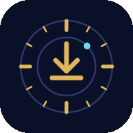

Set up KnowMan Capture
Paste the link of your capture page once. This phone keeps it, and the app opens the page directly from then on.
This browser does not keep data for this page, so the link is not saved. The page opens this time only.